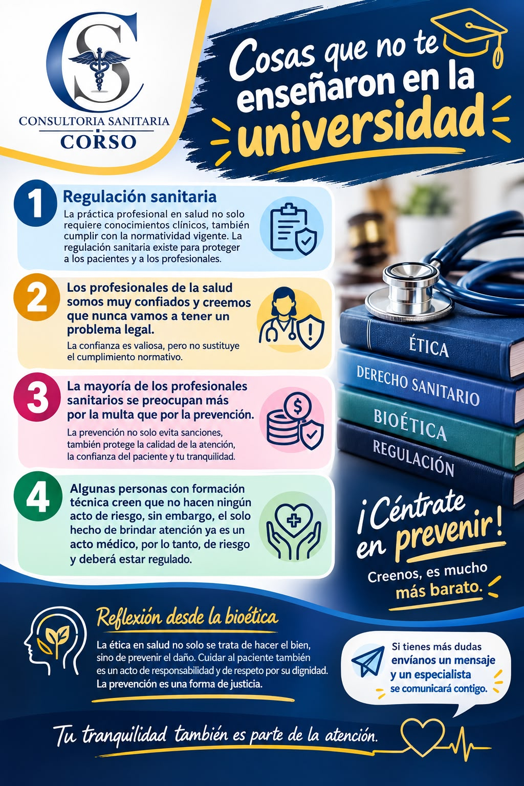

Presentacion institucional
Consultoria sanitaria a nivel nacional, reconocida por la integridad etica y el compromiso humano con nuestros clientes. Cumplimiento normativo, seguridad del paciente y excelencia operativa.
Soluciones de consultoria estrategicas, innovadoras y personalizadas para garantizar el cumplimiento normativo y la excelencia operativa.
Contactar AhoraComprometidos con la calidad y el cumplimiento normativo
Asesoria juridica especializada en procedimientos ante COFEPRIS para que tu establecimiento de salud opere con pleno cumplimiento de la legislacion vigente.
Mejora de procesos internos en clinicas, hospitales y laboratorios clinicos para garantizar la eficiencia operativa y la seguridad del paciente.
Estrategias legales que permiten a los profesionales y empresas del sector salud operar con seguridad y confianza.
Un vistazo rapido a como trabajamos y a los temas que dominamos
Consultoria sanitaria a nivel nacional, reconocida por la integridad etica y el compromiso humano con nuestros clientes. Cumplimiento normativo, seguridad del paciente y excelencia operativa.

La practica profesional en salud no solo requiere conocimientos clinicos, tambien cumplimiento de la normatividad vigente.
ContactanosAntes de ingresar a una carrera tecnica o universitaria, conoce los alcances y las limitaciones de la Ley General de Salud.
Contactanos